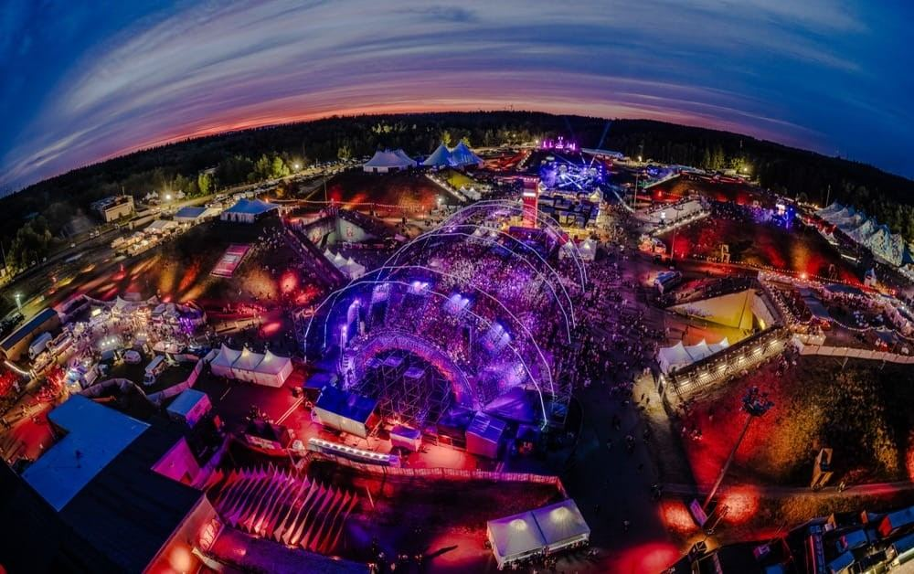

Festivals · Music
Nature One 2027
- Dates
- –
- Venue
- Raketenbasis Pydna, Kastellaun
- Location
- Kastellaun, Germany
- Format
- In-person
- Category
- Music
- Industry
- Electronic dance music festival
- Expected attendance
- 65,000
- Official website
- https://www.nature-one.de/en
About
Dates are local to the host city (Central European Time, UTC+1 / UTC+2 in summer).
Topics: electronic music, rave, techno, EDM.
Official Nature One homepage (fetched 24 Nov 2026) states “350 DJs, 20 floors, 65,000 ravers” alongside the 2027 dates and Raketenbasis Pydna venue.
Sources
Hotels
- BurgStadt Hotel — 4★ · Südstraße 34, 56288 Kastellaun, Germany · 3.4 km from the venue · Price on request
- Landidyll Hotel Restaurant Birkenhof OHG — 4★ · Birkenweg 1, 55469 Klosterkumbd, Germany · 7.8 km from the venue · Price on request
- Hotel & Restaurant Waldesblick — 4★ · Luhnhofweg 1, 56288 Lahr, Germany · 10.2 km from the venue · Price on request
- Hotel Halfenstube und Villa Spa 1894 — 4★ · Moselweinstraße 30, 56820 Senheim, Germany · 16.5 km from the venue · Price on request